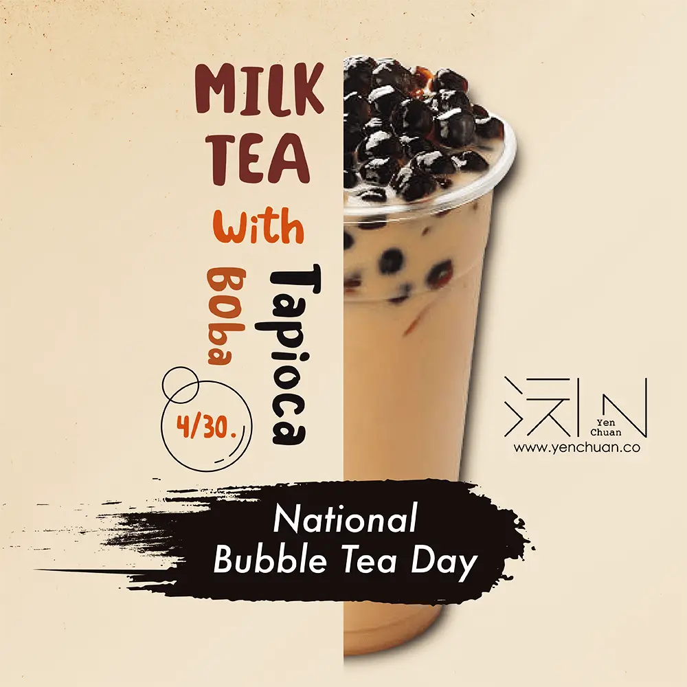
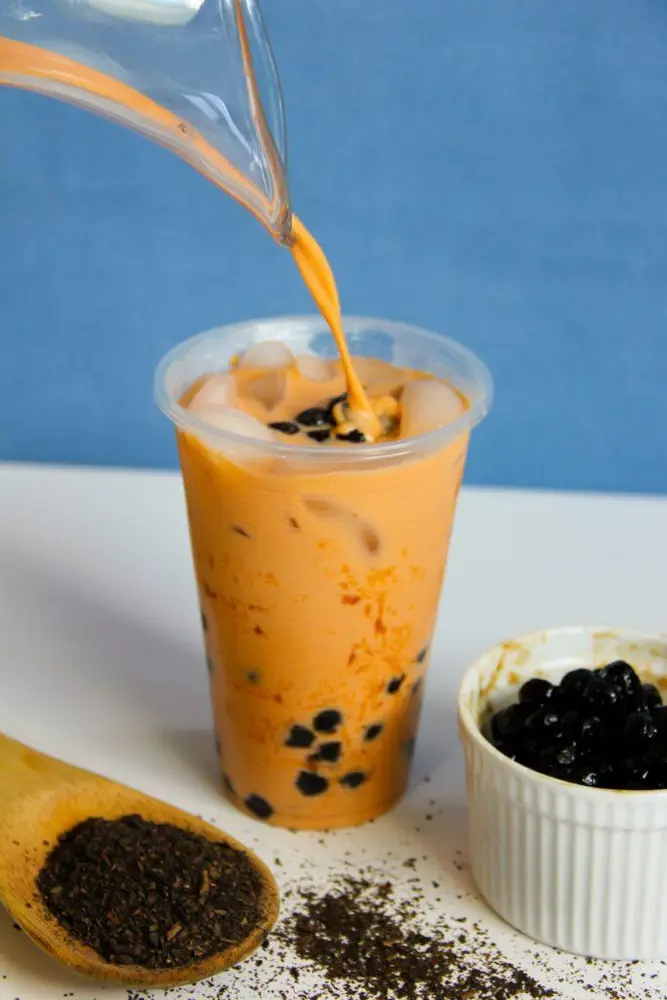
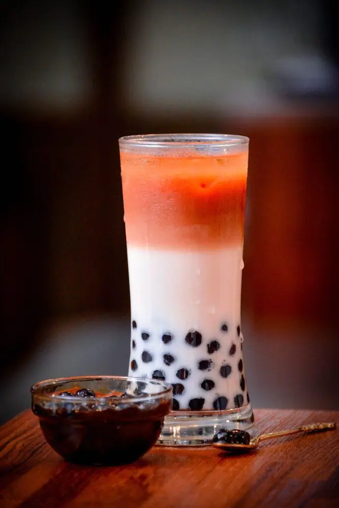

文章 / 飲品配方與資訊
Have a bubbly, exciting National Bubble Tea day!
這篇是英文原文，尚未完成繁體中文翻譯。中文選單與相關商品連結不會切回英文介面。

查看英文原文（尚未翻譯）
Get out your boba straws and grab your friends, April 30th is National Bubble Tea Day!
Let’s celebrate by enjoying the best that bubble tea has to offer.
We are bubbling with enthusiasm just thinking about celebrating this iconic beverage, but have you ever wondered about the history of this national treasure? Read on to find out!

Where did bubble tea come from?
Did you know that the “bubble” in bubble tea does not refer to the tapioca boba, but rather the foamy bubbles created by shaking the tea?
This method of enjoying iced tea was invented in the 1940s, and grew in popularity in the 80s.
As for adding tapioca pearls? While we can trace this combination back to the 80s, exactly who came up with the idea is a subject of debate. In fact, at least two tearooms have claimed to be the inventor of tapioca bubble tea.
While who’s the true inventor of the drink is anybody’s guess, one thing’s for sure: This addicting blend of tea and boba soon became a sensation!
After making it big in its homeland, bubble tea made its way to the United States in the 90s, starting from sunny California. As this fun beverage began growing in popularity, many different boba tea cafes and shops began cropping up in cities and countries all over the world!
What is National Bubble Tea Day?
Interestingly, the origins of National Bubble Tea day has nothing to do with Taiwan or its government!
This holiday actually originated from a marketing campaign of a bubble tea brand in 2018, who applied for April 30th as National Bubble Tea Day.
Why April 30? It was the first day the brand opened shop in New York, way back in 2010.
In 2020, the Taiwanese government also declared their own Bubble Tea Day, which happened to be on the same day. Coincidence or deliberate? You decide!

A global sensation!
Today, bubble tea is enjoyed by millions of people worldwide and has become a cultural phenomenon!
It’s available in a wide variety of flavors, ranging from classic milk tea to fruity and exotic blends. What’s more, it’s highly customizable with different types of milk and sweeteners!
With high quality ingredients, creative drink ideas and a dash of love, a cup of boba tea can brighten up anyone’s day!
How to Celebrate National Bubble Tea Day

Make your own bubble tea at home
Making bubble tea is easier than you think! All you need is tea, milk, sugar, tapioca pearls, and a shaker or blender. No need for fancy ingredients!
You can find our exclusive recipes here:
Take yourself or your friends out
Another way to celebrate to go out for desserts and a quick brew-up, either by yourself or with your loved ones!
Not only do you get to enjoy boba tea yourself, but you also get to share the joy with your family and friends!

Educate yourself on bubble tea
National Bubble Tea Day is also an opportunity to learn more about this iconic drink!
Read all about the history of boba tea, tips and tricks in making the perfect boba, and try your hand in some fun bubble tea recipes!
Post on social media
Want to share your love for this drink to the wide world? Start posting on social media using the hashtag #NationalBubbleTeaDay. Snap some shots of your favourite #aesthetic boba tea, or film yourself brewing your own cuppa.
With many like-minded fans hanging out in the hashtag, it’s the perfect way to discover new bubble tea spots, and to spread the news about this amazing day!
Pretty exciting, huh?
Pick up a cup of delicious bubble tea and join in the fun!